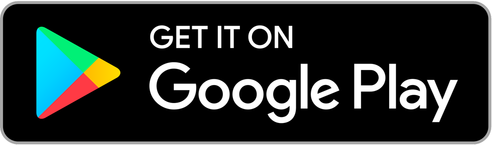
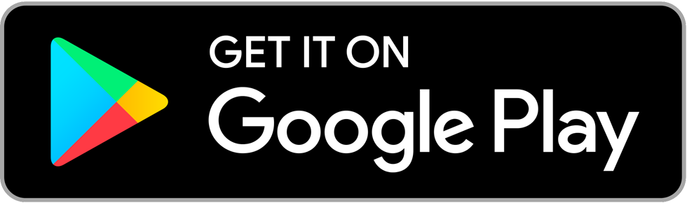

dooplicator is the easiest way to duplicate your snowmobile, all-terrain vehicle, and personal watercraft key!
 

the new (2015+ claw-style) RF DESS keys contain a wireless chip which is validated by the electronics module (MPEM/ECU)
the dooplicator iPhone and Android app uses the NFC chip in your mobile device to read data off your key
when you order a key, your data is programmed to a custom wireless chip which is placed inside a housing with a magnet (to trip the hall sensor in the DESS ball)

our custom wireless chip is a functional clone of your key and appears as the exact same key in your machine, it's a dooplicate!
💳 ORDER A KEY 💳
questions? contact us